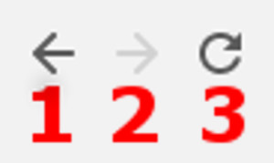

Prehliadač
Používate ho práve teraz a je neodmysliteľnou súčasťou práce s internetom. Avšak treba aj vedieť, základné
prvky, ktoré nám ponúka. Na obrázku nižšie môžete vidieť aktuálny vzhľad najpoužívateľnejšieho prehliadača
Google Chrome.
Dizajn ktoréhokoľvek prehliadača sa dá rozobrať na tieto 2 časti:
- Stránka
- Panel prehliadača
Prvú časť nebudeme rozoberať, pretože jej obsah závisí od danej stránky.
Panel Prehliadača
V paneli sa nachádzajú tieto položky:
- Panel adresy
- Tlačidlá
- Karty
1 - Panel adresy; 2 - Tlačidlá; 3 - Karty
1 Panel adresy
Do tohto miesta sa zadáva adresa stránky. Adresa má tvar
www.bláblbá.sk. Presmerovanie na takúto stránku sa pokúsime na konci tejto sekcie.
Okrem adresy stránky sa tam môže nachádzať aj ikonka zelenej kladky. Znamená to, že stránka je zabezpečená, a teda môžete
zadávať vaše údaje bez strachu, že by dajaký „hacker“ zistil vašu aktivitu na konkrétnej stránke.
Ak sa takáto ikona nenachádza, neodporúča sa zadávať vaše osobné údaje.
2 Tlačidlá
Tlačidlá sú veľmi užitočné a prehliadači ich nájdete napravo od panela adresy.
Nachádzajú sa tu tieto 3 základné tlačidlá:
-
Späť - Presmeruje vás na predchádzajúcu stránku
-
Dopredu - Presmeruje vás naspäť na stránku, v ktorej ste stlačili tlačidlo späť
-
Znovu načítať - Znovu načíta vašu stránku

1 - Späť; 2 - Dopredu; 3 - Znovu načítať
3 Karty
Každá karta obsahuje iba jednu stránku, ale prehliadač môže mať kariet koľko len chce. To znamená, že
karty budeme využívať vtedy, keď budeme potrebovať otvoriť novú stránku bez toho aby sme zatvorili
aktuálnu.
Vytvorenie karty kliknutím na obdĺžnik
Zatvorenie karty kliknutím na krížik
Vyhľadávanie
Hľadanie informácií je naužitočnejšia funkcia, ktorú prehliadač ponúka. Preto je dobre aby sme ju tiež
ovládali.
Postup pri vyhľadávaní
Najlepšou voľbou pre vyhľadávanie je stránka www.google.sk. Aby sme sa na ňu dostali postupujte nasledovne:
- Kliknite kurzorom myši do panela adresy
- napíšte www.google.sk
- Stlačte tlačídlo [Enter] na vašej klávesnici
Alternatívne kliknite na tento
ODKAZ
Načítanie stránky google.sk